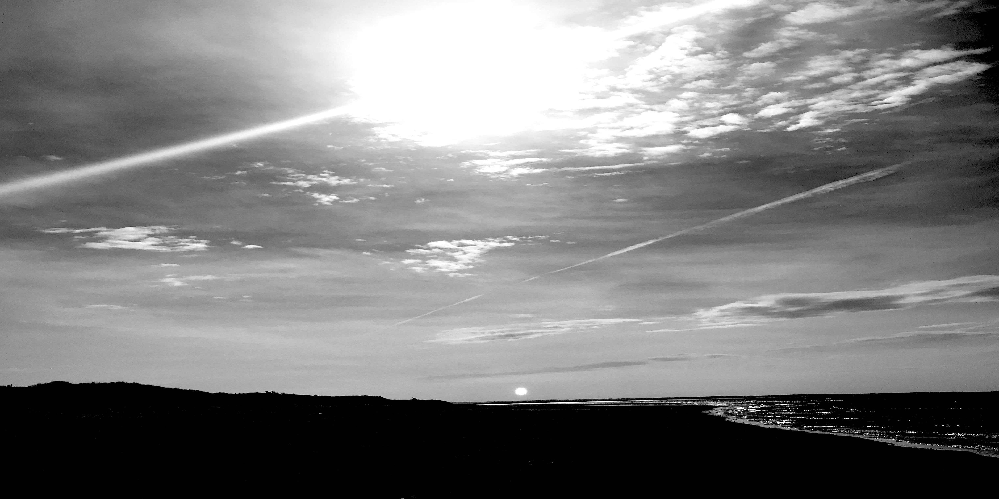

Love by no other name
June 27, 2019
A excerpt from another publication, to view others, click the link to the personal blog on the righthand sidebar
What is this enigma we call love? This emotion? This drug? This power? At some point in our lives it takes hold of each and every one of us; ensnaring us in a web that we cannot, nor do we do wish to, escape. Love is all consuming, overpowering, undeniable. Every waking moment of every day of our short, insignificant, lives we are ruled by emotion, love most of all. We laugh out of joy, we cry for reunion. We weep out of sadness, we despair at a broken heart. We hurt out of hate, we kill for love... This is its power to drive us mad, to bend our minds, and to cloud our judgment, thought, and reason until only one thing remains. We may be slaves to passion, but we are the playthings of love.
While we may feel the everyday, unconditional love of family, friends, or beloved pets, there is nothing so sweet, so fleeting as falling in love. Time stands still, the sound of life fades as the earth falls away until you are floating over the clouds. To feel the touch of another, to see the truth in their eyes, and to know that your heart is no longer your own; it is for this moment we live.
To live is not to sit around, thinking, day by day To sit and reason all your days, and lock your heart away, To laugh, to cry, to sing, to die, this is why we stay Upon this earth, this barren world, and fall into the fray.
To give our heart unto the sky To take a breath to say goodbye To see the love in another's eyes This is why we live
Where are we?
May 28, 2020
Where indeed?
Lost, found, somewhere in between. Humanity is at a turning point, where entities of influence and power war against one another in an effort to impose their will. Whether you be a pawn, a knight, or a king, you are still just a part of the game. The rules are nonexistant, the goal is to find the answer to a question. One question to last until the end of time, when the stars fade to black and the universe is still. Who, what, where are you?
Connection
May 1, 2020
In the beginning there were fleeting particles of light and matter, pinwheeling through an endless void. These particles gave way to atoms, atoms to molecules, molecules to tissues, tissues to organs, organs to animals– yet all are just as insignificant as the last in an infinite universe. For all our power, our ingenuity, our strength, and our wickedness, we are less than pawns in the vast machine of existence. We live and we die, we rise and we fall, and we will soon fade out of this continuum, nothing more than a brief disturbance in the rippling fabric of reality. To dissuade this notion we fancy ourselves immortal conquerors, fighting and killing over insignificant trivialities until our inevitable demise. We are truly a tragic race.
But through all of our hubris and spite, we cling together. Desperately, unable and unwilling to let go, we hold each other tightly as we spin through this empty nothingness. Not one of us wishes to face this burden alone. Now more than ever we are lost, falling, fading. Yet now, more than ever, we must hold on. Find someone, another soul who understands your plight. Run to them, and open your arms as they run to you. Hold them, do not let them go, as we plummet into an endless sea of dying stars. And stay with them, as we walk where giants fly.
About Us
In a time where newsprint is a thing of the past, we aim to provide a dose of serenity and introspection to your daily routine. Enjoy!